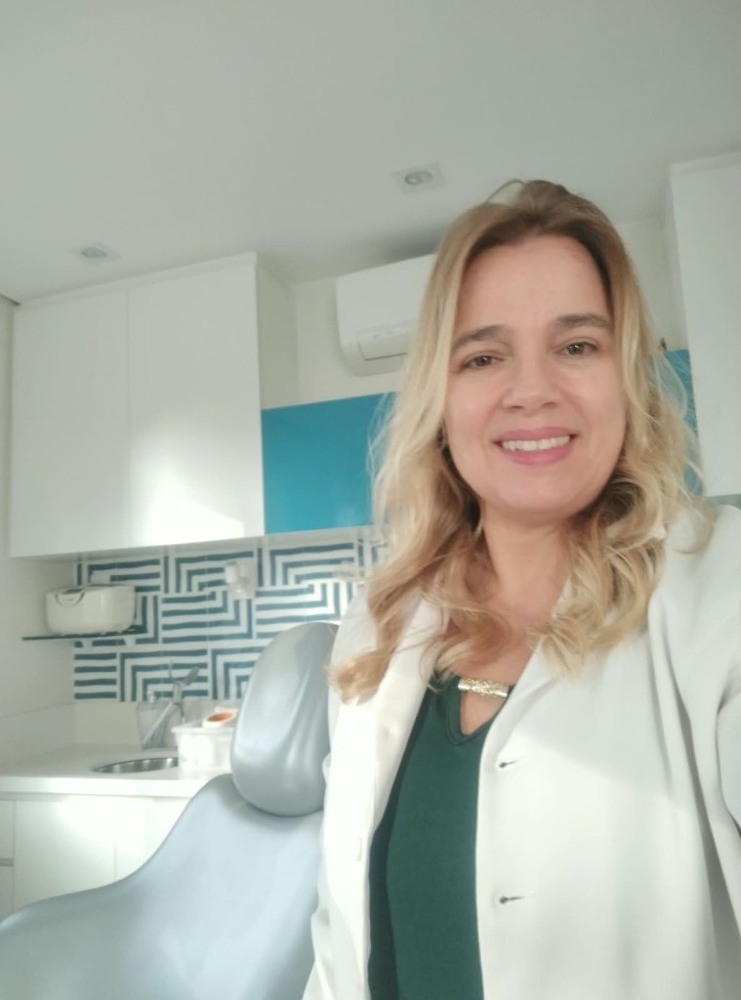
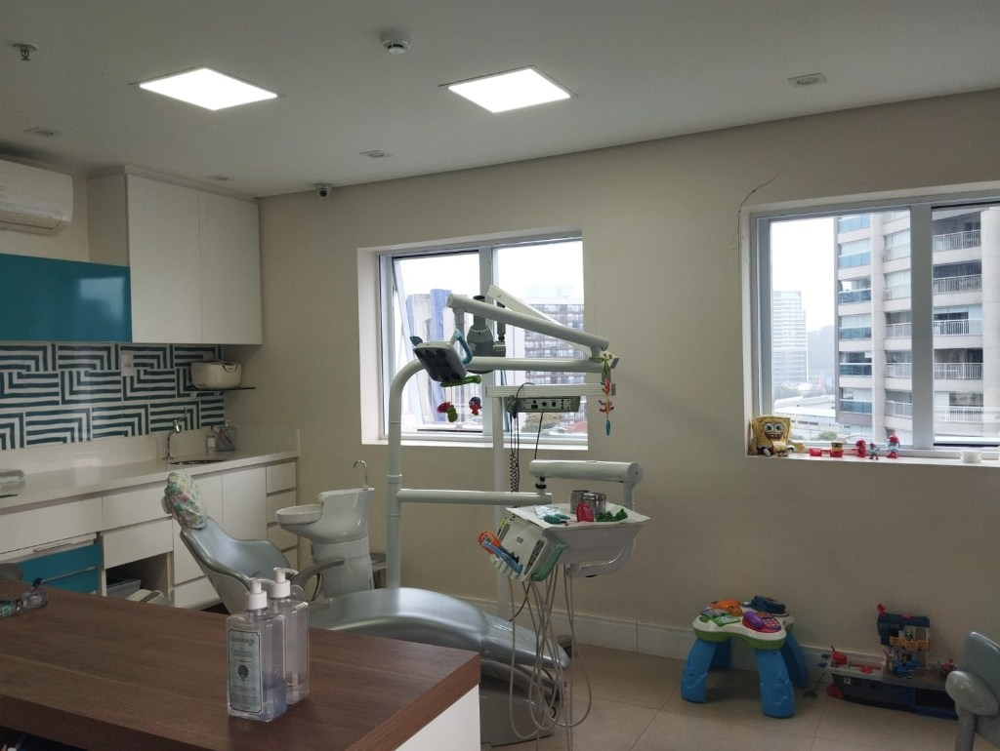
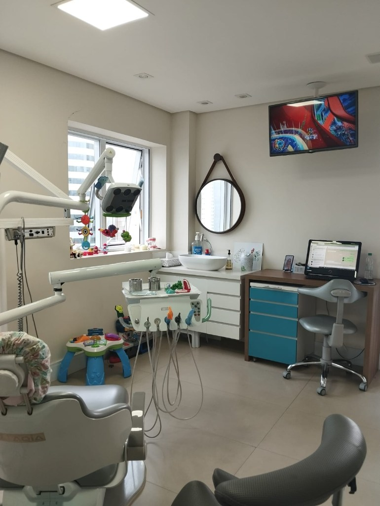

Cuidar de você.
Cuidar do seu
sorriso.
Um olhar atento para cada fase da vida.
Odontologia com acolhimento, prevenção
e cuidado individualizado.
Seu sorriso faz parte de algo maior.
Da sua saúde. Da sua história. De você.
Seu sorriso.
Seu próprio cuidado.
Conheça as áreas de atendimento e encontre o próximo passo para cuidar da saúde bucal da sua família.
Pré-natal
odontológico.
Cuidando da saúde bucal da gestante e orientando os primeiros cuidados preventivos para o bebê.
02 / DESDE BEBÊSPequenos sorrisos,
grandes começos.
Odontopediatria: acompanhamento de bebês, crianças e adolescentes com foco em prevenção.
03 / DESENVOLVIMENTOUm olhar além
dos dentes.
Ortopedia funcional dos maxilares e ortodontia: aparelhos removíveis, fixos e alinhadores invisíveis.
04 / TODAS AS IDADESCuidar hoje.
Sorrir amanhã.
Prevenção, monitoramento da saúde bucal e clínica geral. Equipe em parceria com outras especialidades.

Prazer, Carmen.
Seu cuidado tem
nome e rosto.
Sou a Dra. Carmen Silvia Flores de Freitas, cirurgiã-dentista e especialista em Odontopediatria e Ortopedia Funcional dos Maxilares à frente da Cuidar e Sorrir Odontologia, em Pinheiros, São Paulo.
Acredito em um atendimento que começa por ouvir. Entender suas dúvidas e explicar cada etapa são partes importantes de construir, juntos, o seu plano de cuidado.
Respirar. Dormir.
Cuidar por inteiro.
A respiração inadequada pode alterar desde a posição da língua e lábios, entre outros músculos da face, podendo estar aliados a diversos fatores sistêmicos — associada a sono fragmentado, sonolência diurna e reflexos na qualidade de vida, no rendimento escolar e no desempenho no trabalho.
Explorar os conteúdosCuidado pensado
em cada detalhe.
Atendimento particular com hora marcada em Pinheiros, estruturado para acolher crianças, jovens e adultos com tranquilidade.
Consultas sem pressa
Espaço para conversar com calma, compreender o histórico de cada paciente e explicar cada etapa do plano de cuidado com clareza.
Além dos dentes
Atenção integrada à respiração, qualidade do sono, desenvolvimento dos maxilares e hábitos que impactam a saúde bucal e o bem-estar.
Acolhimento familiar
Localização de fácil acesso no Ed. Thera Office Faria Lima (Rua Amaro Cavalheiro, 347 · 7º andar · Sala 720), preparado para receber desde a primeira infância até a fase adulta.

